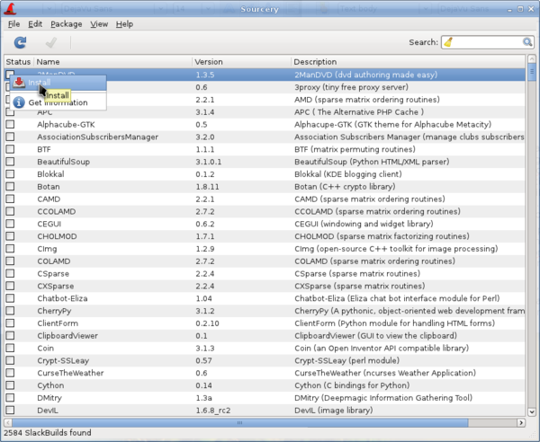

Sourcery is a graphical frontend to slapt-src, a utility to build and install packages from source using SlackBuilds or SLKBUILDs. Before use, you should first click on the Update button on the toolbar to ensure that the latest updates from the software repositories are known to Sourcery. The search field is there for you to search for a particular package, and installations, uninstallations or reinstallations of selected packages are done by left or right clicking on their status boxes.
Installation/uninstallation/reinstallation will take place once you click on the Execute button.
Please be sure to look at the README file for the application, and any other information, before installing. In Sourcery, these files can be accessed by clicking Get Information before selecting to install; you can also right-click on the tick box after you've selected it for installation. The readme file, in particular, often has information about dependencies or configuration steps required to make the build work; for example, privoxy needs a 'privoxy' group to be created of which your user is a member, and without this not only will the application not work, the build will fail.
